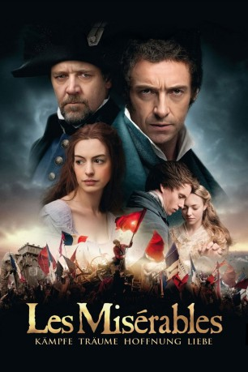

#348 Les Misérables
Auszeichnungen: 3 Oscars gewonnen für 5 Oscars nominiert 3 GoldenGlobes gewonnen 4 BAFTA-Awards gewonnen
 
 IMDB-Wertung: 7.6 / 10
IMDB-Wertung: 7.6 / 10  Metascore: 63
Metascore: 63 
Valjean, der 19 Jahre für den Diebstahl eines Laibes Brot verbüßt hat, macht nach seiner Freilassung eine tiefgreifende religiöse Erfahrung. Er taucht unter und hat sich acht Jahre später zum wohltätigen Fabrikbesitzer gewandelt. Nach dem Tod von Fantine, die sich und ihre Tochter Cosette als Prostituierte durchbringen musste, kümmert sich Valjean um das Mädchen. Als junge Frau verliebt sich Cosette in den passionierten Revolutionär Marius. Die Revolte endet im Blutbad, dank Valjeans Edelmut werden die jungen Liebenden jedoch vereint.
Jahr: 2012
Dauer: 158 Minuten
FSK: 12
Land: USA Studio: Universal PicturesTonspuren: DTS - ,
Untertitel:
Auflösung: 1080p (1920×1040) Größe: 10649 MB
Genre: Drama, Geschichte, Musical, Liebe, Krieg
Regisseur: Tom Hooper
Drehbuch: William Nicholson, Alain Boublil, Claude-Michel Schönberg, Herbert Kretzmer, Alain Boublil
Soundtrack:
Darsteller:
Datei: X:\2012(G-M)\Les Misérables (2012, FSK12, 1920x1040).mkv seit 17.02.2015
Festplatte: HD 2012(A-M)
 Es gibt insgesamt 112 Filme in der Gruppe '2012(G-M)'
Es gibt insgesamt 112 Filme in der Gruppe '2012(G-M)'